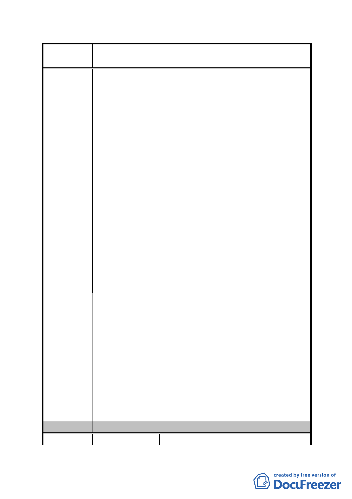

案
名
修訂臺北市「基隆河（中山橋至成美橋段）附近地區土地使
用分區與都市設計管制要點」（北段地區）計畫案
二、復因內湖科技園區低價工業區土地大幅放寬允許使用範
圍，幾已涵蓋商業區之主要用途，原角色功能再被替代，
加深本區商娛土地開發困境。
三、相較於台北市其他商業區土地，並未如本區有限定「商、
娛用途過半」且「不准許住宅使用」等限制，開發計畫
可依分區管制及市場機制規劃適合用途，發展緊湊、效
率提昇。反觀本區商用土地因過多干預、重重限制，致
發展困難。兩相比較，難謂「公平」、也無「效率」，
與土地利用基本原理背道而馳。
四、爰建議本區管制要點逕回歸臺北市土地使用分區管制規
則第三種商業區相關規定辦理：
1、「商娛用途過半」及「不准許住宅使用」原規定宜于
刪除。
2、公展內容新增規定「最低建蔽率」將減少開放空間；
「非住宅用途建築物單元內不得設置廁所茶水間」更
涉入建築物內部規劃，有所不宜。建議此類「防範性」
規定應于刪除。
3、本區應比照本市其他商業區，於確認地面層非住宅無
衝突情形下，維持原計畫「綜合設計獎勵」規定。
4、高強度商業區作低強度住宅區使用，應無「回饋」問
題，建議比照本市其他商業區，取消「回饋」規定。
本會建議如下: 建請刪除大彎北段地區內商業區及娛樂區
「禁止住宅使用」相關規定，並逕于回歸臺北市土地使用分
區管制規則第三種商業區相關規定辦理，俾符合「公平」及
「效率」等土地利用基本原則，並維權利關係人合法權益，
促進該地區合理發展：
建議辦法
(一)刪除原計畫「作原計畫允許使用之容積樓地板面積應達
申請基地總容積樓地板面積之l/2 以上」及「不准許住
宅使用」之僵硬規定。
(二)刪除公展內容「最低建蔽率」、「非住宅用途建築物單
元內不得設置廁所茶水間」及「回饋」等規定，另「綜
合設計獎勵」建議維持原計畫規定。
委 員 會 決 議 同編號 1。
編 號 14 陳情人 呂吉弘
- 71 -